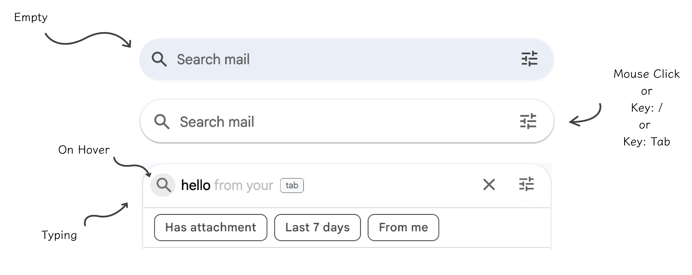
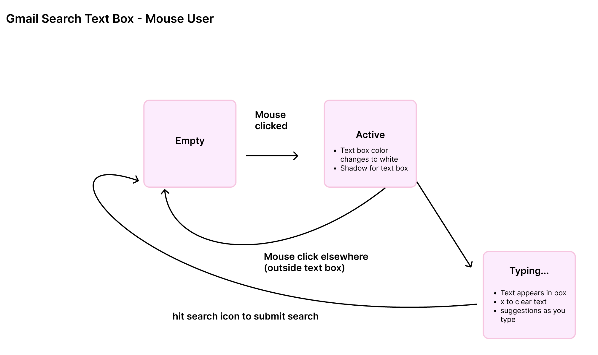
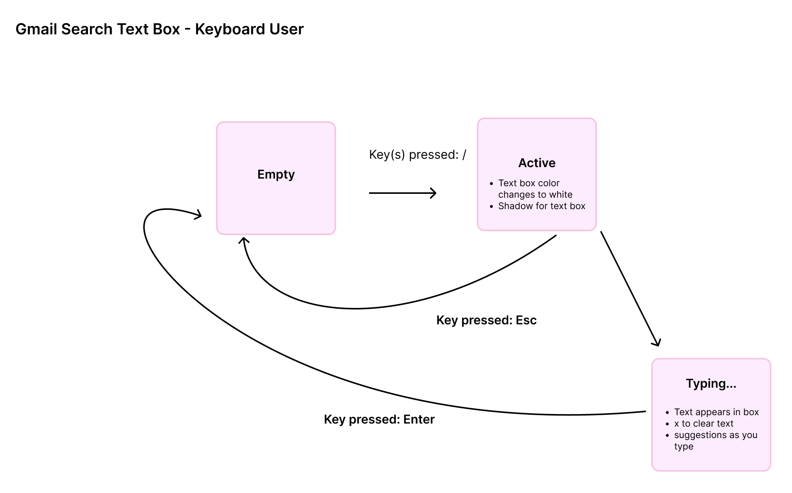
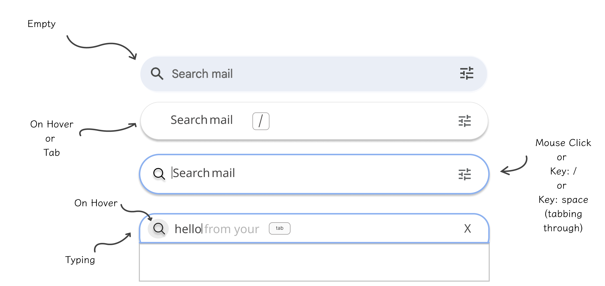
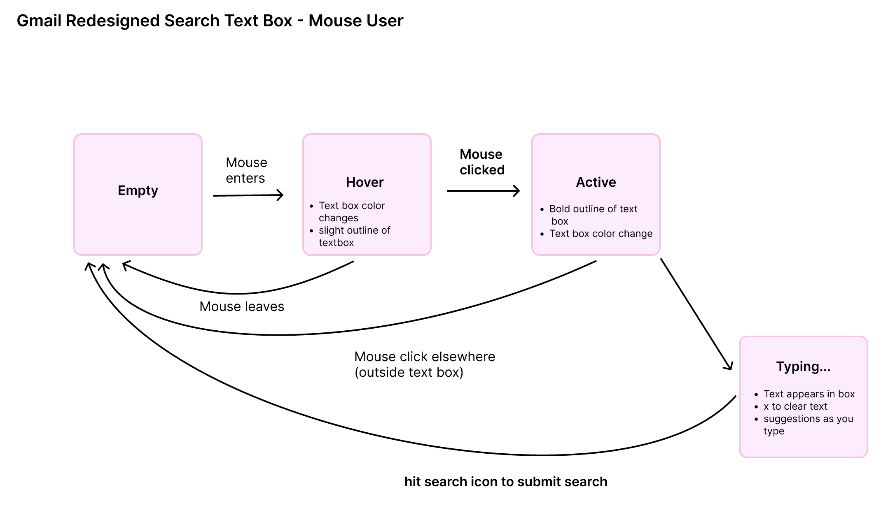
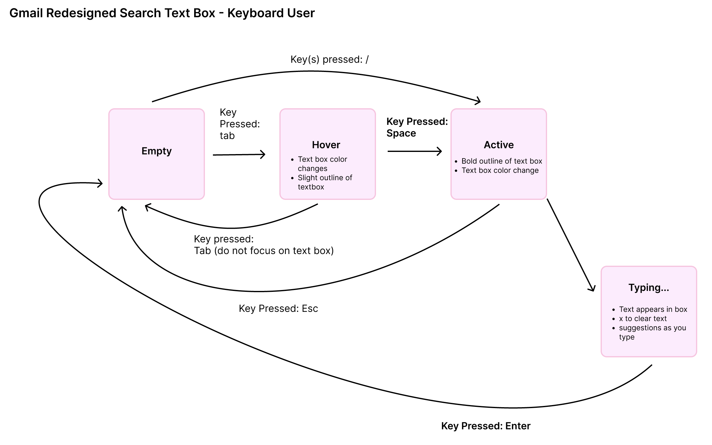

Accessible Components
.png)
Type
Self Initiated
Role
UX Designer
Tools
FIGMA
Analyzing the accessibility of search bars — then redesigning Gmail's search.
Type
Self Initiated
Role
UX Designer
Tools
Analyzing the accessibility of search bars — then redesigning Gmail's search.
First, I sought out to interact with the different components on each application using different inputs: keyboard, mouse, and touch. I tracked how the user experience of each input noting its functionalities. Below is a overview of the different interactions.
| Spotify | Gmail | ||
|---|---|---|---|
| Mouse/Touchpad |
|
|
|
| Keyboard |
|
|
|
| Touch |
|
|
|
Next, I observed the visual cues that show users when the search bar changes states. I focused on the color of the search bar, border thickness, and the contents inside the search bar/text box. I also utilized a screen reader on all applications to see how each application interacted with it. Below is a overview of my observations.
| Spotify | Gmail | ||
|---|---|---|---|
| Color | On Hover: Different color -- Lighter shade of grey | On Hover + On Click: Different color -- Darker color search bar | On Click: Different color -- Search bar becomes white |
| Border Thickness |
On Hover: Slight light grey outline On click: Bold white outline around text box and bolded search icon On Submit/Enter: outline disappears |
On Click: Bright blue + bold outline around text box | On Click: Shadow outline |
| Text in Box |
On click: X button to exit On Hover: Keyboard shorcut |
On click: X button to exit No more search icon submit button |
Typing: "tab" to autofill |
Given the lack of a hover state and observed difficulty navigating to search for keyboard users, I decided to focus on redesiging the search bar on Gmail. Before getting to my redesign I looked closer at the input/output/state interactions on Gmail and then reflected on how I can improve its accessibility. Below is the current Gmail design broken down through its visual states and state models, a problem-solution flowchart, and finally the redesign given the solutions above.
Visual of Current Gmail Search Bar
Mouse and Keyboard Interactions

State Models of Current Gmail Search Bar
Mouse Interactions

Keyboard Interactions

Problem #1
No hover state
Solution #1
On Hover: Change Appearance
Problem #2
Hard-to-Learn Keyboard Shortcut
Solution #2
On Hover: Show Shortcut Key
Problem #3
No Difference Between Hover & Active States
Solution #3
On Click: Blue Outline
Tradeoffs
Visual of Redesign
Mouse and Keyboard Interactions

State Models of Redesign
Mouse Interactions

Keyboard Interactions

Often components are designed with mouse/touchpad users in mind, excluding that some people can only navigate through the keyboard. Before reading Google's "Keyboard shorcuts" guide, I thought I was only able to naviagte to the search bar by clicking tab until I got to the component. With Gmail having many features, this was very tedious especially after doing it numerous times. My redesign kept this in mind by adding an on hover state that gives the users the command.